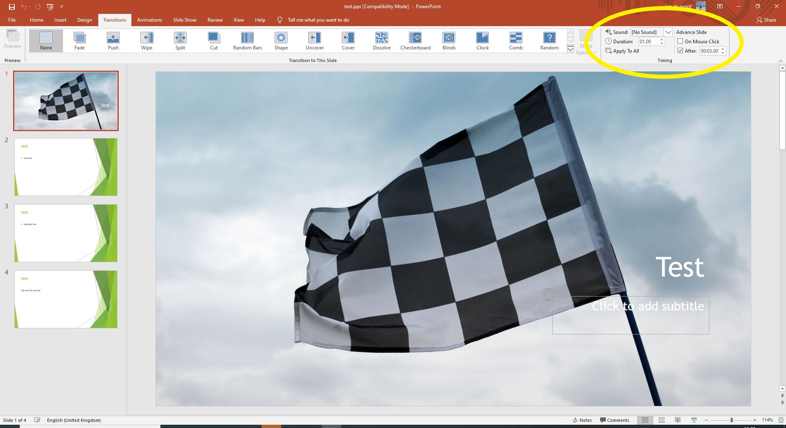
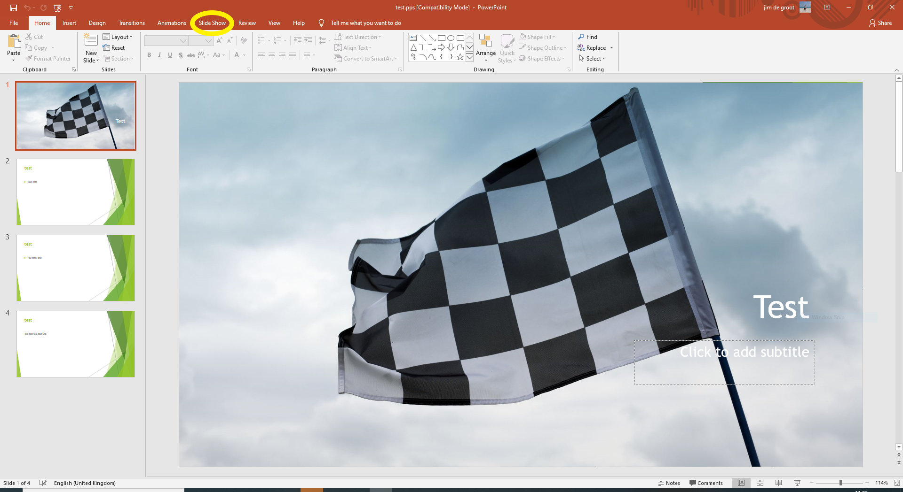
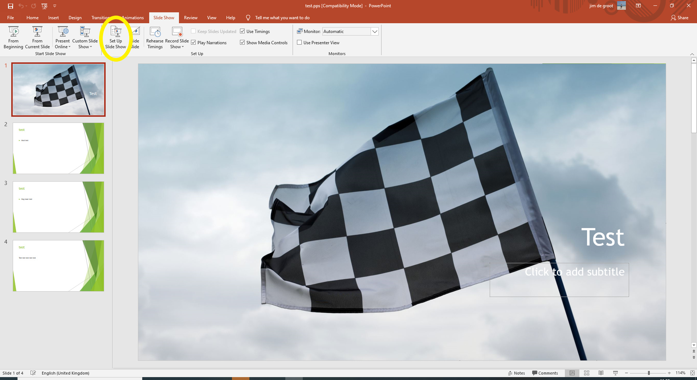
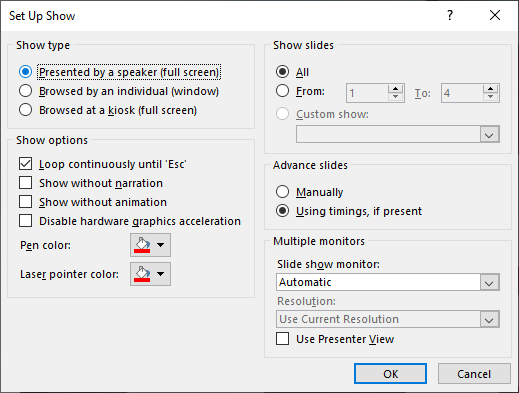
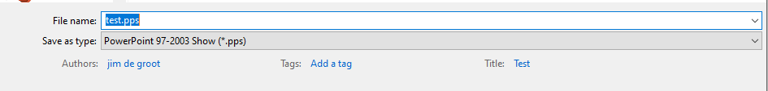

1. Selecteer tab transitions (overgang)

2. selecteer de tijd wanneer er naar de volgende slide moet worden gegaan en zet het vinkje On Mouse Click (bij muis klik) uit. Klik vervolgens op Apply to all.

3. Selecteer slide show (presentatie) tab.

4. klik op set up slideshow (instellen presentatie).

5. stel de instellingen in zoals op het plaatje.

6. Zorg dat je bij opslaan .pps als type selecteert. Upload daarna het bestand en de oude presentatie word gestopt en de nieuwe gaat automatisch lopen.